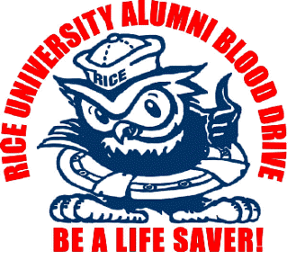

|
NEWS
For the latest news see BARAG
homepage.
News
Archive: 7/12/01.
 April
2001 Alumni Nationwide
Blood Drive
Just
because the Blood Drive is over doesn't mean that you are off the
hook! The Blood Centers still need your valuable donations. Please
let
everyone know that Rice cares. Be
a life saver! Schedule
an Appointment at a local Blood
Center. If you live outside the Bay
Area, you can locate the
nearest blood center by calling 1.888.BLOOD.88 or
1.800.GIVE.LIFE or
by visiting America’s Blood Centers’ website at http://www.americasblood.org
or the American Red Cross website at http://www.redcross.org.
The
President of the Alumni thanks you
(see letter) for your donation.
An
Evening with the Rice Alliance
by
Marisa
Jennings, Class of '00
 Dr.
Steven Currall has a vision. It is a vision of synergy between technological and
entrepreneurial resources in the Rice community and a vision of local
prosperity through successful commercialization of technological
innovation. Dr. Currall,
Associate Professor of Management and Psychology at Rice, is the
Founding Director of the Rice Alliance for Technology and
Entrepreneurship, a joint effort between Rice’s engineering, natural
sciences, and management schools.
On April 4, Dr. Currall presented the mission and activities of
the Rice Alliance to about 80 Rice alumni from the Bay Area.
The purpose of the Rice Alliance is to promote entrepreneurial
ventures stemming from Rice’s technically talented students,
faculty, staff and alumni. Dr.
Steven Currall has a vision. It is a vision of synergy between technological and
entrepreneurial resources in the Rice community and a vision of local
prosperity through successful commercialization of technological
innovation. Dr. Currall,
Associate Professor of Management and Psychology at Rice, is the
Founding Director of the Rice Alliance for Technology and
Entrepreneurship, a joint effort between Rice’s engineering, natural
sciences, and management schools.
On April 4, Dr. Currall presented the mission and activities of
the Rice Alliance to about 80 Rice alumni from the Bay Area.
The purpose of the Rice Alliance is to promote entrepreneurial
ventures stemming from Rice’s technically talented students,
faculty, staff and alumni.
...Full Story
RiceOwls
Baseball

A
large crowd turned out in support of the first-place RiceOwls for
their three game series against the Spartans in San Jose. Alumni of
all ages were out to root for the home team. To get alumni into the
mood, pre-game festivities include a festive Texas
Style BBQ. Alumni cheered on for the Owls who, unfortunately, lost the
first two games by 5-7 and 5-7. With some timely hitting and solid
pitching, the Owls avoided the sweep by taking the third game with the
score of 10-1.
...Pictures
Technology
Tourists: Jones School Students Explore Silicon Valley Opportunities
by
Ronnie Ghosh, MBA '02
Seeking to explore opportunities in technology, five first-year
Rice MBA candidates, took a trip to the MBA Consortium California
Event, held in Silicon Valley, March 29-30.
Accompanied by Peter Veruki, Executive Director of Admissions and
Career Planning, and Monika Drake, Assistant Director, Career Planning
Center, the students joined MBA candidates from Carnegie Mellon,
Southern Methodist University, Wake Forest, Vanderbilt, Univ. of
Rochester, and Tulane in spending two exciting days in the Valley. The
event was hosted by technology giants such as Cisco Systems, Apple
Computer, Hewlett Packard and Intel, among others.
...Full
Story
Special Interests
We are looking for volunteers to identify & organize
recurring events in each of the regions of the Bay Area. If you are
interested, please contact one of the coordinators.
The Survey Says...
In regards to the survey, I want to thank, on
behalf of the Association of Rice Alumni, everyone that participated. I have
posted it on the links under Survey
Results. Going forward, we will be
using this list not only to mine for events ideas, but also to involve some
of you that have indicated that they wouldn't mind leading special interest groups to help form
recurring activities based around your areas of interests.
Articles/Bay Area Alumni Newsletter
I am taking offers to feature articles
of interest on this Alumni website in order to share information that will
entertain or enlighten our members. I am planning to have an one page
newsletter published for Summer 2001 that will be posted on the
website. I encourage you to submit
your ideas/articles onto the website. Some areas that I want to focus on are personal development,
alumni profile and local news of alumni.
Alumni Focus Group
On the Veterans Day Weekend, Kimberly Mauersberg from Rice University along with a
consultant conducted local Alumni focus groups to gather ideas for new
products or service for the University. I'll try to get the white
paper published onto the website. One of the topics that were
discussed included this local chapter of the Alumni Group and how we
can strengthen our ties with the main campus. In this important
service for the University, I would like our group to explore three
areas of focus: interview potential Rice candidates; develop
a mentor program for undergraduates as well as young professionals;
and career placement in the Bay Area. I
would like to eventually develop a local Alumni scholarship fund that
will allow local alumnus to interview and grant scholarships based on merit and
economics, for children of alumni who intend on attend Rice
University.
From the Editor
There
are 1600 members in the Bay Area so get involved, stay in touch and participate!
Thanks and welcome to the SF Bay Area Alumni
Homepage! Drop me a
line if you have any comments.
Simon Chan.
Back to top.
|